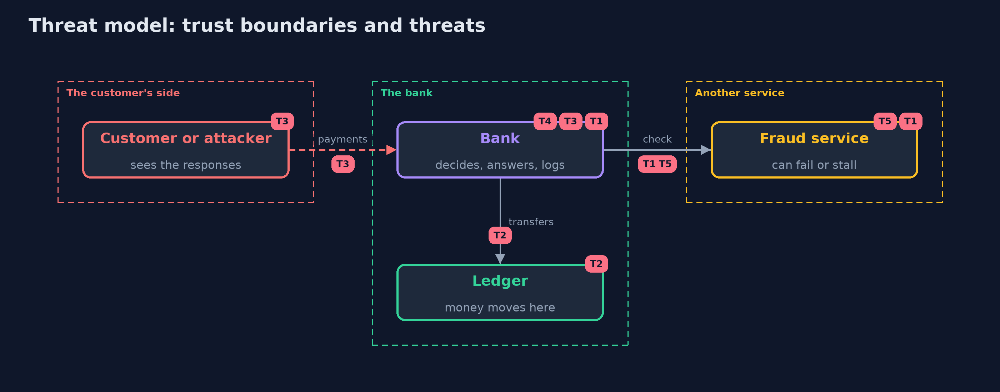

Threat Model — Failing Closed with Spring Boot
A threat model answers four questions: what are we protecting, who or what could harm it, how, and what do we do about it. This one covers this project's own demo system, not a production deployment. Domain: an online bank.
Scope
A Spring Boot bank that approves card payments through an outside fraud service, moves money in a ledger and answers customers. It covers failures of the outside service, half-done transfers and what error responses and logs reveal. It does not cover the fraud service's own logic.
What we protect (assets)
- The money in the ledger.
- The card numbers.
- The availability of payments.
Who and what acts on the system
- A customer, or an attacker who can make the fraud service slow or broken.
- Support staff who read the log.
- A developer who changes the error and transaction settings.
Trust boundaries
A trust boundary is a line that data or a request crosses between parts that trust each other differently. Threats cluster where those lines are.
- The bank to the fraud service: anything can come back, or nothing.
- The bank to the customer: the response is public.
- The bank to the log: support may read it.

Each dashed box is a trust boundary. A rose tag such as T1 shows where the threat of that number, in the table below, applies.
Threats, using STRIDE
STRIDE is a checklist of six kinds of threat: Spoofing (S), Tampering (T), Repudiation (R), Information disclosure (I), Denial of service (D), Elevation of privilege (E).
| Id | Kind | Threat | Where it shows up | Control in this project | What is left |
|---|---|---|---|---|---|
| T1 | Elevation of privilege | A broken or stalled fraud check turns into an approval | OpenPaymentService, ClosedPaymentService |
The decision starts as no; only a check that ran and passed approves | A fraud service that answers low risk wrongly |
| T2 | Tampering | A failed transfer leaves the money half moved | Transfers |
A unit of work with rollbackFor, called through the proxy | Transfers across systems, which need reconciliation |
| T3 | Information disclosure | The error response reveals servers, card numbers or code | Boot's error response, ErrorHandling |
One error handler, error details off, a reference for support | A new exception path that nobody mapped |
| T4 | Information disclosure | The log holds a full card number | SecurityLog |
Log the reference, the reason and the last four digits only | A developer who logs the request body |
| T5 | Denial of service | A slow or failing service holds every payment up | FraudClient, Breaker |
A time budget, a limited retry, a breaker and an alert on refusals | A long outage that is refused correctly and still hurts |
Assumptions
- The log is readable only by support staff.
- The ledger database is trusted and reachable.
Out of scope
- Attacks on the fraud service itself.
- Transactions across several databases.
How the tests check this
FailClosedSpringTeststarts a real bank and fraud server for each case: every kind of broken check, the time budget, the breaker and its states, the doubling of calls by a retry, the alert, the four transfers, the error responses and the log.DemoRunsTestcompares the whole demo with the golden output.
Where this model goes next
This is the last project in the secure-configuration module. The next module, api-security, moves from how the store fails to who may call it and how often.